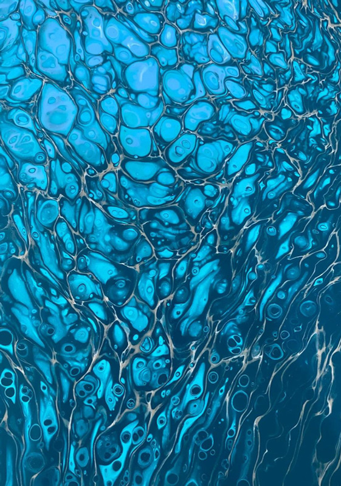
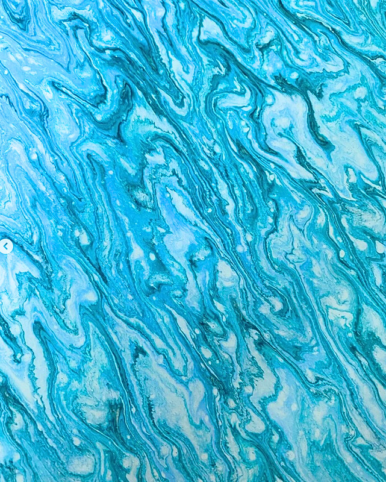
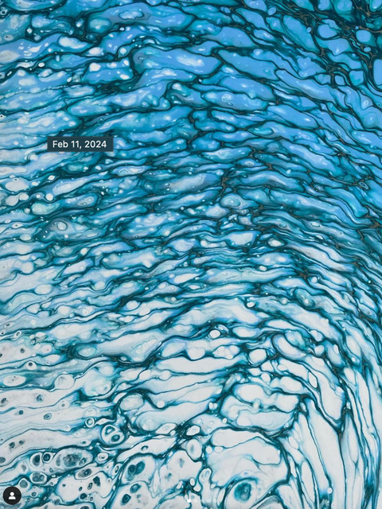
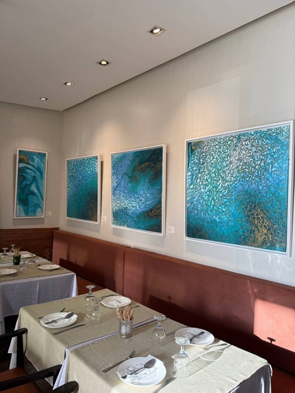
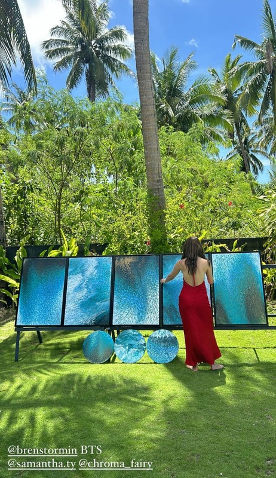
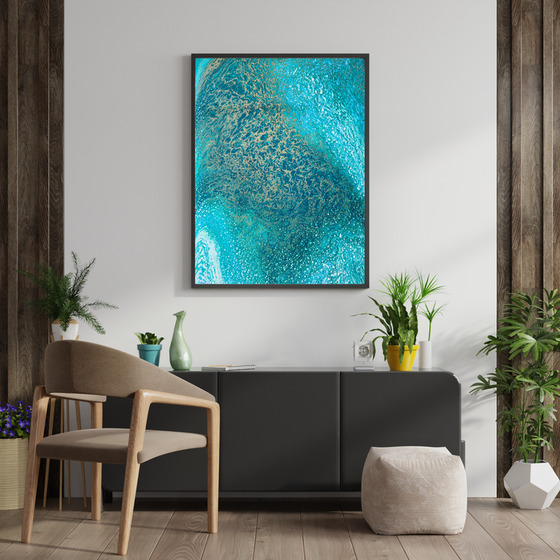
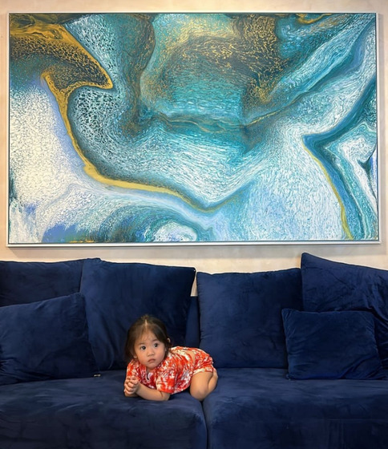
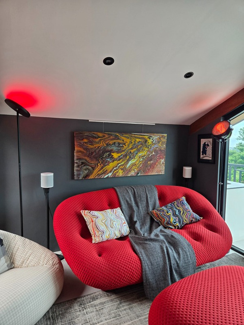
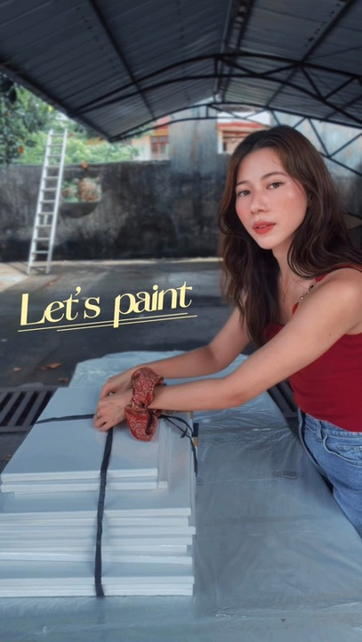

Eternal Flow I
The artist's reverence for water shows in her series entitled "Eternal Flow." Water has always been the universal symbol for life. By creating water-themed paintings, she captures vitality and life itself, and aims to bring this energy out into the world — one painting at a time.




Her solo exhibit — a body of ocean-drawn work, deep teals and marbled whites, presented together.
Fluid panels set against tropical light — the paintings meeting the sea and sky that inspired them.

Her pieces, in the spaces they now call home.



Custom fluid pieces, sized and toned for your home or space — created in dialogue with you.
Palette, size, and the feeling you want the piece to hold.
Samantha creates and shares progress as the flow takes form.
Finished, sealed, and delivered — ready for its wall.
Cover artwork for the Asian Development Outlook 2024.
Featured in the Asian Development Bank's LinkedIn newsletter.
Featured artist, The Weigh+.
Exhibited at Xavier Artfest 2024.
"Philippine's Finest" at the House of Representatives.
Waves of Being — solo exhibit, Galeria Lienzo.
Samantha Ty is a Philippine-based abstract artist whose works capture the life and essence of nature.
She combines techniques that create unique patterns resembling the elements — water, magma, lightning, and other forces. Through her medium, she allows the paint's natural flow to take center stage, gently guiding its course with her movements. Her pieces are infused with energy, and they breathe life into any space they grace.
Born on August 30, 1992, in the province of Surigao del Sur, Samantha's early exposure to music set the stage for her artistic pursuits. However, it was the loss of her father that became the catalyst for her exploration of abstract painting. This pivotal moment reminded her of the fleeting nature of life and encouraged her to pursue her dream of becoming an artist. Driven by a profound connection to nature, she discovered the world of fluid art.
This process of creating allowed her to tap into her true self and experience a great sense of joy and freedom. Today, Samantha continues to explore the depths of her imagination through her art. Her work is a testament to the beauty of dreams and the transformative power of following one's heart.

For commissions, exhibitions, and press.